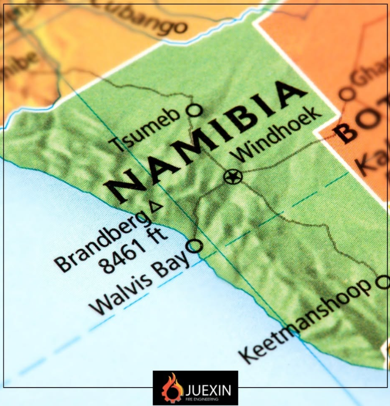

Engineering-Led Approach
Solutions are shaped by fire science, engineering judgement and a clear understanding of real-world project constraints.
About Juexin
Juexin Fire Engineering is a specialist consulting firm focused on life safety, property protection, regulatory compliance and operational resilience.
Established in 2018
Founded in 2018, Juexin Fire Engineering delivers specialist fire engineering consulting services for commercial, industrial, residential, mining, hospitality, public infrastructure and high-risk environments.
The firm supports clients across South Africa and neighbouring countries, with operational reach also including Namibia and the United Kingdom. Its work is centred on clear fire engineering strategies, practical implementation and defensible compliance outcomes.
Each engagement combines scientific principles, engineering judgement, local standards and relevant international fire safety standards, while remaining practical for the design team, contractor and operator.
What makes the firm credible
Solutions are shaped by fire science, engineering judgement and a clear understanding of real-world project constraints.
The aim is to support compliance while keeping design outcomes clear, achievable and aligned to project delivery.
Support for architects, developers, engineers, facility managers and operators across complex environments.
Operating footprint
Juexin is positioned to support project teams across South Africa and neighbouring countries, with operations noted for Namibia and the United Kingdom. The website should make that reach visible while still keeping the brand grounded as a specialist engineering consultancy.

Regional support across South Africa, neighbouring markets, Namibia and the United Kingdom.
Standards and references
This concept uses careful placeholder wording. The final site should confirm formal memberships, registrations, accreditations and authorised claims with the client before publishing.